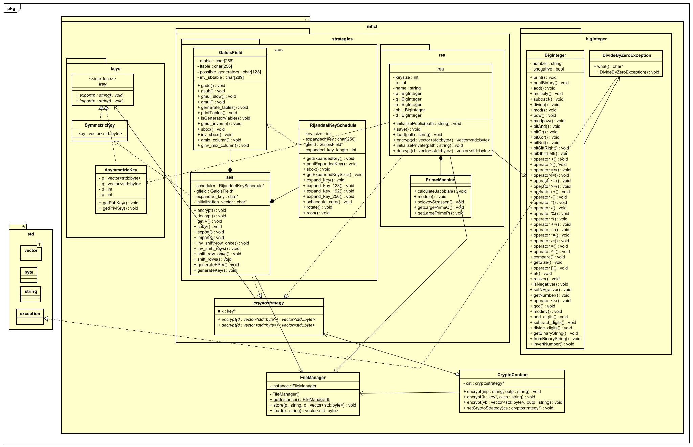

Modern information security builds upon three essential algorithms: A symmetric encryption algorithm, an asymmetric encryption algorithm and a hash algorithm.
The essential applications are encrypted data transfer and digital signatures. Encrypting data before sending it over a public channel preserves privacy, confidentiality and integrity. You still can't be sure who sent you the encrypted data. That's what digitial signatures are for. Digitial signatures ensure commitment and authenticity of encrypted data transmissions.
Often it is theorized that quantum computing can more efficiently solve discrete logarithms that the RSA algorithm is based on. I have written a personal (potentially unsafe) cryptographic library called MHCL. The main idea is that there are two types of keys, for each type of encryption algorithm and a client accessable crypto context from where the client can choose a crypto strategy. Interaction with the file system is modeled by the class "File Manager" which is a singleton. Names for the patterns are based on Erich Gamma's book "Design Patterns, Patterns Elements Reusable Object Oriented Software".  UML Class Diagram of MHCL done with Astah
You can upload any file here and have a look at the bytes that make up that file: